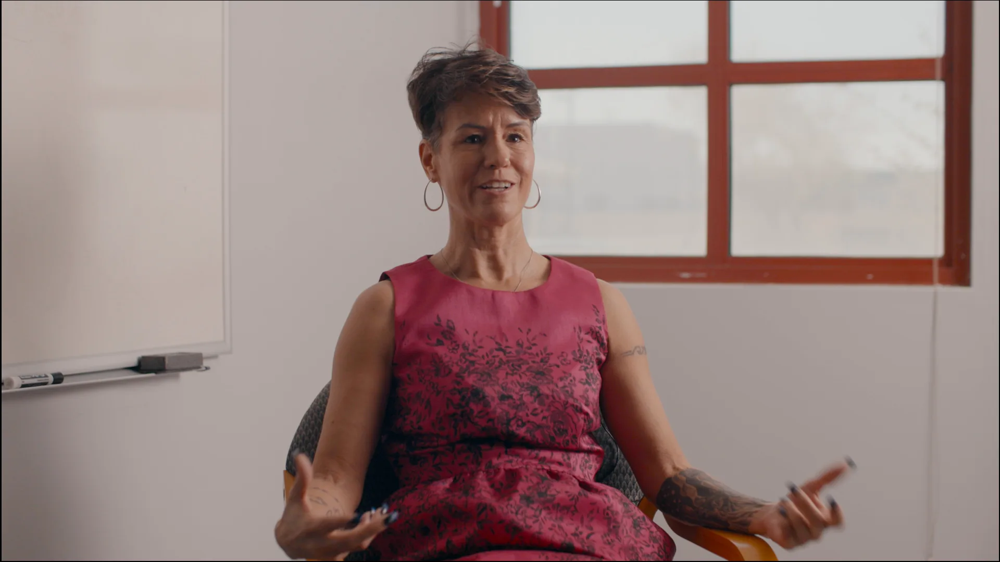
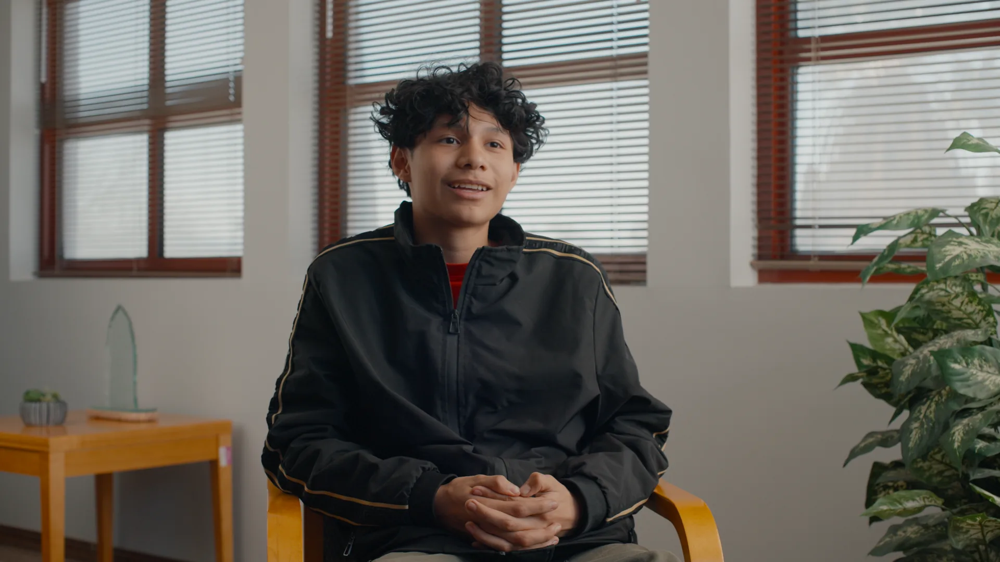
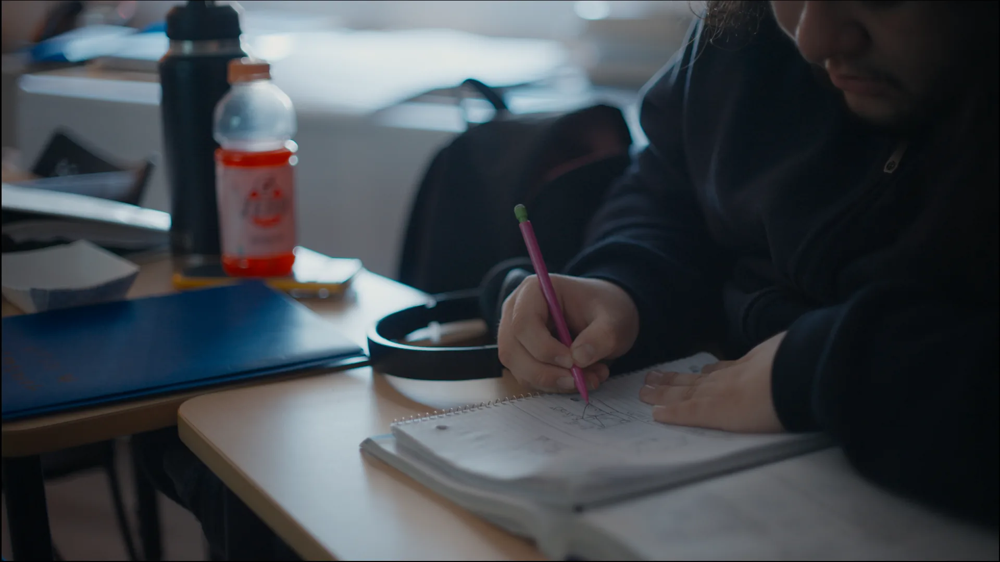

Arizona Center for Youth Resources
About
Documentary project with Arizona Center for Youth Resources, produced as a university collaboration.
Role
Director of Photography
Client Testimonial
"Thank you to Akhil, Jack, Max, Stewart, Kabeer, and Adriana for bringing Thomas's story and our mission to life through this documentary!"
- Arizona Center for Youth Resources
Equipment
- Canon C70, Sony ZV-E1, Canon C200
- Canon FD and Nikkor AI-S lenses
- Aputure 300d II, Godox SL60W
Tools
- DaVinci Resolve - Edit, Color, & Sound
Stills


